Android SDK下载地址：
http://www.skycn.com/soft/52396.html
http://download.pchome.net/development/sample/detail-142455.html
http://www.android123.com.cn/sdkxiazai/
如果里面已经有了模拟器则会出现模拟器列表，如果没有请点击界面"New…"按钮,
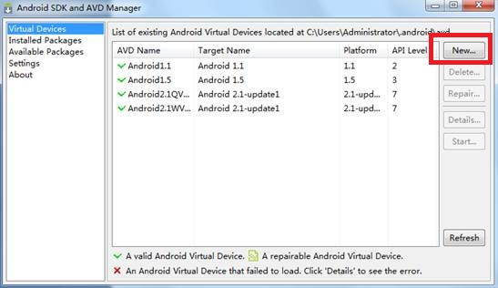
Name里面输入为模拟器取的名字
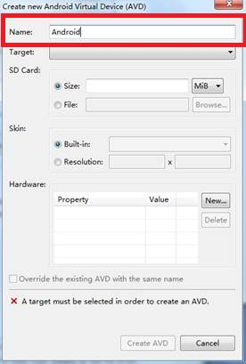
选择Target1.5以上的版本。
以上步骤都完成以后点击Create AVD按钮，此时前面界面的列表里面就多了一项我们刚创建的模拟器： 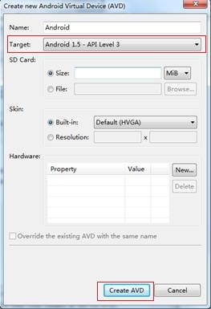
选择创建的模拟器，点击Start…按钮，弹出确认界面如下图：
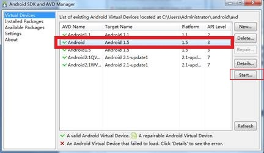
点击Launch按钮，
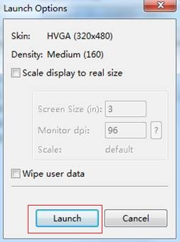
弹出Android模拟器：
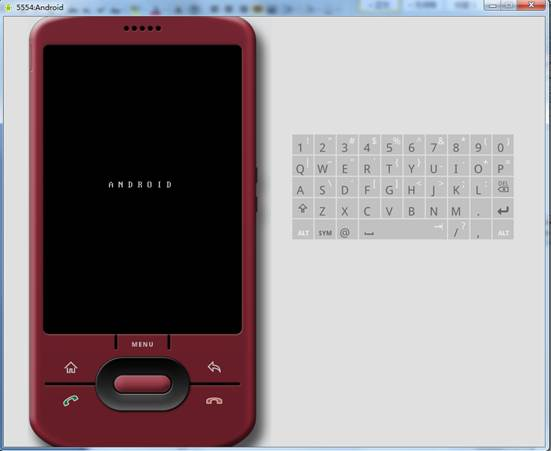
在计算机的左下角"开始"选择"运行"，在输入框中输入cmd进入命令提示符：
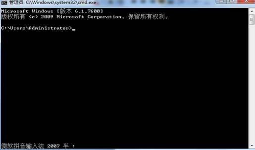
在该窗口中进入SDK的tools目录（这里，也会因为版本不同略有差异，有的会在platform-tools目录下，判断标准是进入的目录是adb.exe所在的目录。） 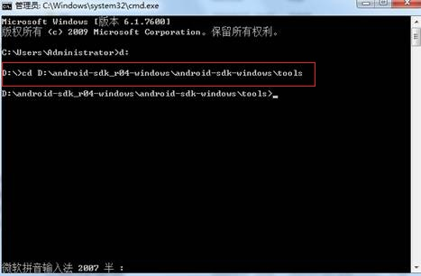
如果apk文件名为ceair_android.apk，则在该窗体中敲入命令adb install ceair_android.apk后，再按回车键。
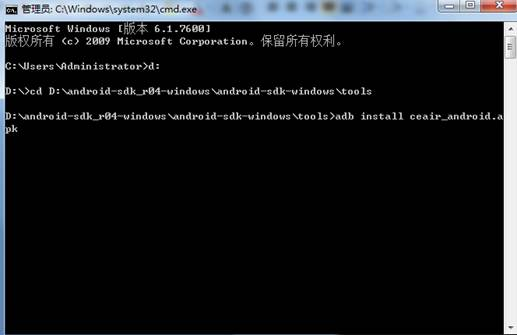
最后提示如下图表示安装成功。
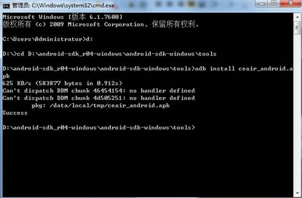
备注：
现在做项目的时候，是根据自己的IP和映射在虚拟机的端口找对应的客户端人员打包，按以上步骤打开就可以用了。
1.登陆安装模拟器bluestacks官方网站http://www.bluestacks.cn下载其安装程序。
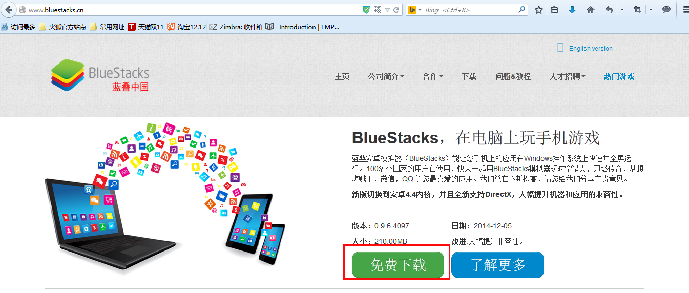
2.双击上一步已经下载完毕的安装程序：
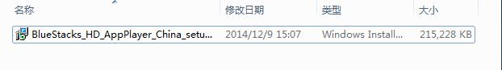
随之，在弹出的提示框中选择“运行”按钮
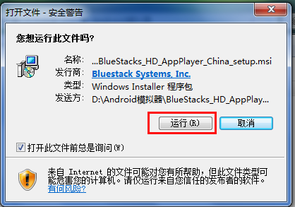
3.等待安装包的释放，在出现的选择页面勾选“我接受许可协议的条款”，然后点击“下一步”按钮！
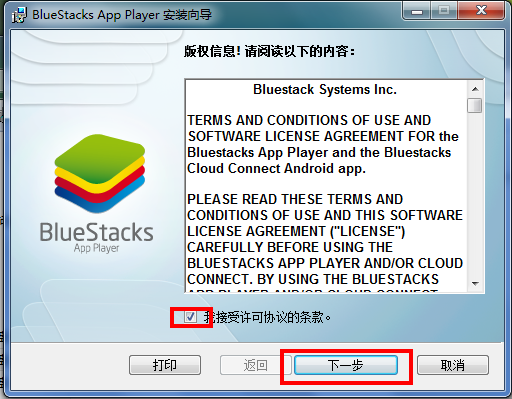
4.之后是选择程序可选功能选项，其默认为全选，建议不修改，点击“安装”按钮开始安装。
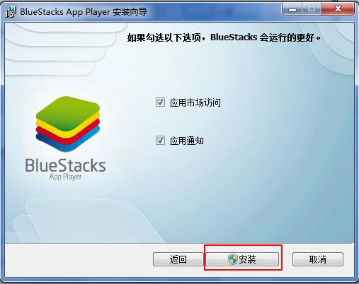
5.耐心等待几分钟，安装完成后点击“完成”按钮即可。
genymotion 模拟器安装请参照https://www.genymotion.com/ 网站说明安装。
在没有网络的情况下，将genymotion和vbox相关文件夹拷入本机即可运行。
启动genymotion：
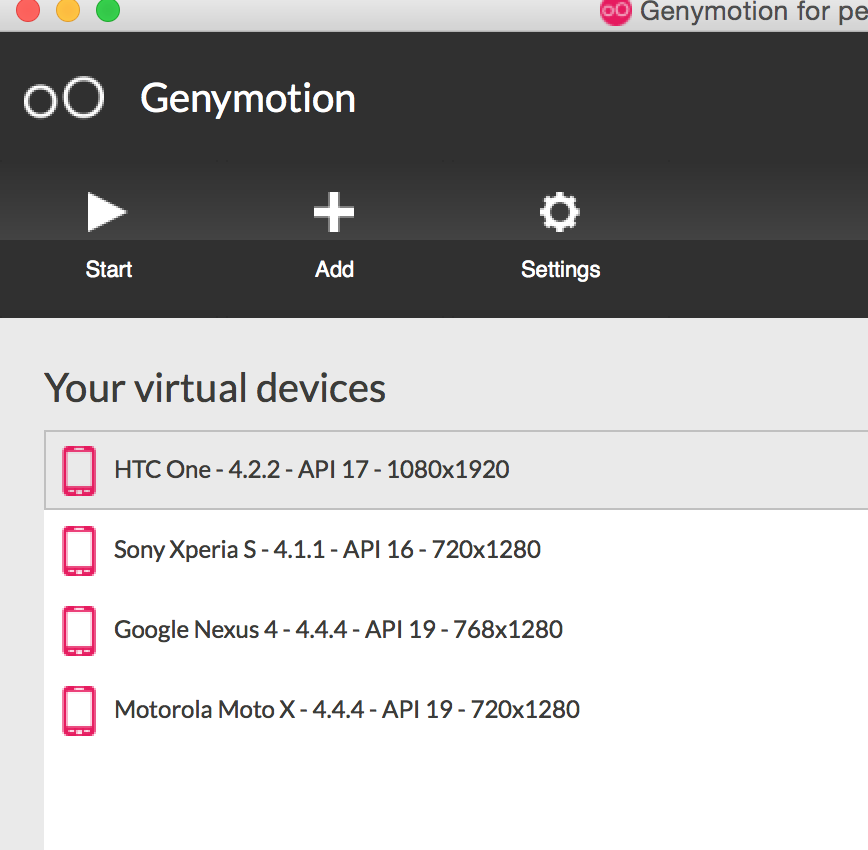
点击start，进入相应手机界面：
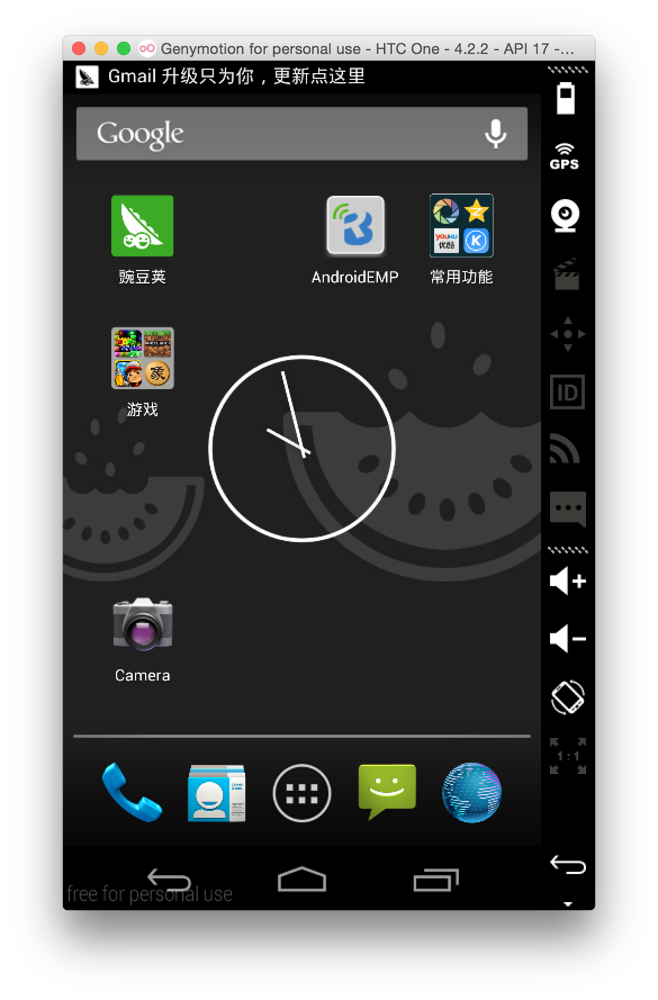
将apk往手机里面拖入即可。
如果在拖入过程中出现错误，请参照http://blog.csdn.net/wjr2012/article/details/16359113 操作即可。
在无网的情况下，需要相关负责人将此包优先下载好。